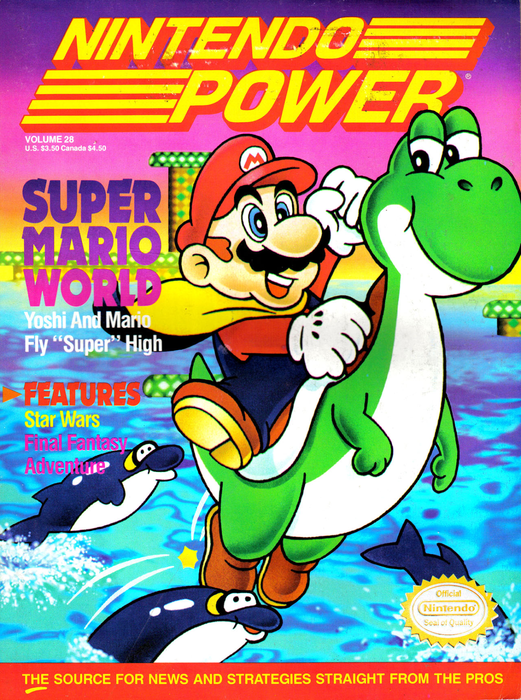
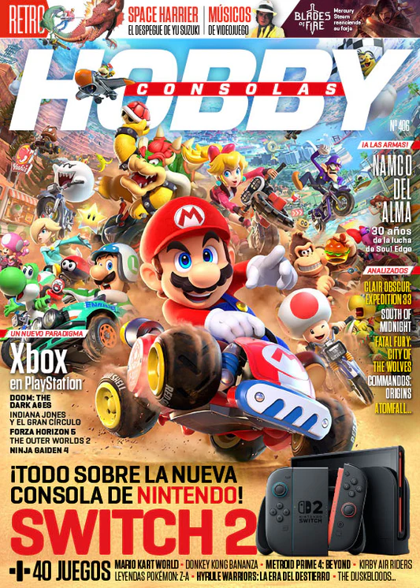
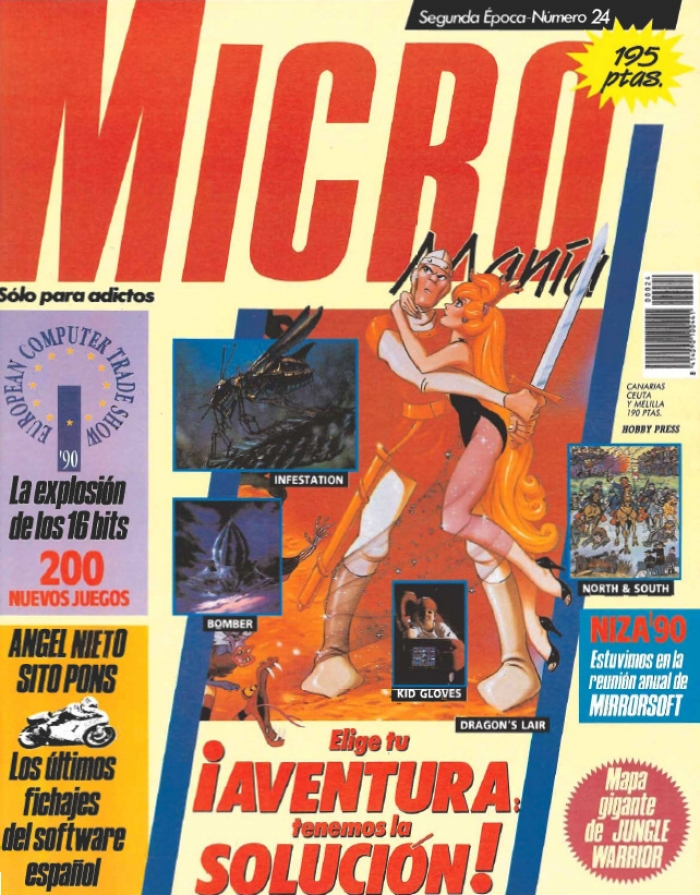

Abans de l’arribada d’internet, les revistes especialitzades eren la principal font
d’informació per als jugadors. Oferien anàlisis, trucs, mapes, entrevistes i notícies
que mantenien viva la comunitat i alimentaven la passió pel videojoc.
Publicacions com Nintendo Power, Hobby Consolas i
Micromanía van marcar generacions. Les seves portades, reportatges i
seccions especials són avui peces de col·leccionisme molt valorades.
Les revistes no només informaven: creaven comunitat, impulsaven sagues,
influïen en la percepció dels videojocs i ajudaven a consolidar la indústria.
Molts jugadors van descobrir els seus títols preferits gràcies a aquestes publicacions.
El paper de les revistes
Abans d’internet, les revistes especialitzades eren la principal font d’informació
sobre videojocs. Publicaven anàlisis, trucs, mapes, entrevistes i notícies que mantenien viva
la comunitat i ajudaven els jugadors a descobrir nous títols.
Títols com Nintendo Power als EUA o Hobby Consolas
a Espanya van marcar generacions, convertint-se en referència per a jugadors i col·leccionistes.
El seu llegat continua viu en la cultura retro actual.
Portades icòniques

Nintendo Power

Hobby Consolas

Micromanía